Part 2
2.BGM: Doki Doki Literature Club! (modified - no "Doki Doki!" at the beginning)
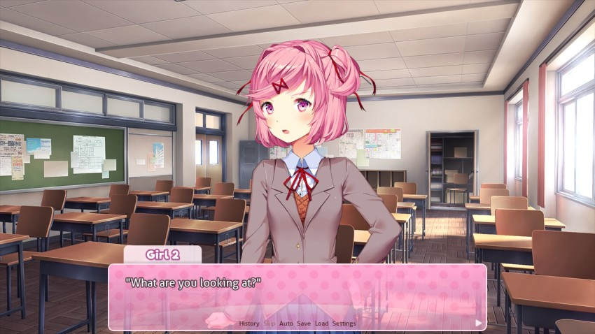
 : If you want to say something, say it."
: If you want to say something, say it."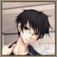: S-Sorry..."
 : Natsuki...: Hmph."
: Natsuki...: Hmph."The girl with the sour attitude, whose name is apparently Natsuki, is one I don't recognize. Her small figure makes me think she's probably a first-year. She is also the one who made cupcakes, according to Sayori.
I like that Mitayo remembers this; hes got his cupcake-shaped priorities in order.
 : You can just ignore her when she gets moody~"
: You can just ignore her when she gets moody~"Sayori says that quietly into my ears, then turns back towards the other girls.
: Anyway! This is Natsuki, always full of energy. And this is Yuri, the smartest in the club!"Yuri, huh? According to google, that means Lily. Natsuki, in contrast, comes from a mix of 'summer' and 'hope'. As an afterthought, Sayori might be a combination of small, night, and village, though that might be a huge stretch.
: D-Don't say things like that..."Yuri, who appears comparably more mature and timid, seems to have a hard time keeping up with people like Sayori and Natsuki.
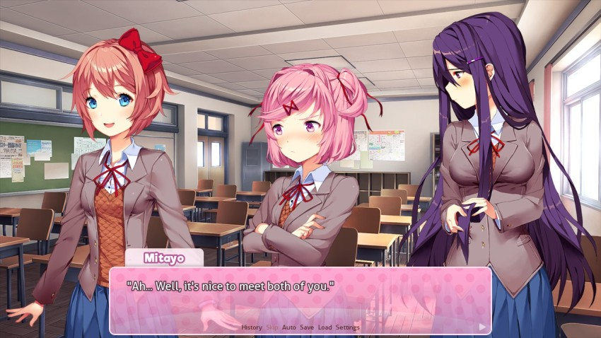
: And it sounds like you already know Monika, is that right?"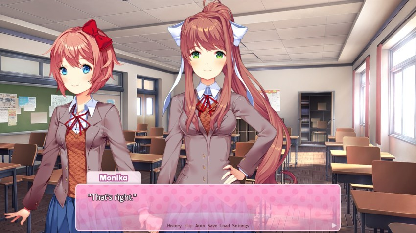
 : It's great to see you again, Mitayo."
: It's great to see you again, Mitayo."Monika smiles sweetly. We do know each other - well, we rarely talked, but we were in the same class last year. Monika was probably the most popular girl in class - smart, beautiful, athletic. Basically, completely out of my league. So, having her smile at me so genuinely feels a little...
: Y-You too, Monika."
: Come sit down, Mitayo! We made room for you at the table, so you can sit next to me or Monika. I'll get the cupcakes~": Hey! I made them, I'll get them!": Sorry, I got a little too excited~"Sayori really likes the tilde-trail off. I used to do that all the time when I was like fifteen.
: Then, how about I make some tea as well?"The girls have a few desks arranged to form a long table. As Sayori mentioned, it's been widened so that there is one space next to Monika and one space next to Sayori. Natsuki and Yuri walk over the corner of the room, where Natsuki grabs a wrapped tray and Yuri opens the closet. Still feeling awkward, I take a seat next to Sayori. Natsuki proudly marches back to the table, tray in hand.
: ...Ta-daa!": Uwooooah!"Natsuki lifts the foil off the tray to reveal a dozen white, fluffy cupcakes decorated to look like little cats. The whiskers are drawn with icing, and little pieces of chocolate were used to make ears.
: So cuuuute~!"I want a cupcake now. It's 9:20 in the morning though.
: I had no idea you were so good at baking, Natsuki!": Ehehe. Well, you know. Just hurry and take one!"Sayori grabs one first, then Monika. I follow.
: It's delicious!"Sayori talks with her mouth full and has already managed to get icing on her face.
I kind of imagine Sayori as a yellow lab.
I turn the cupcake around in my fingers, looking for the best angle to take a bite. Natsuki is quiet. I can't help but notice her sneaking glances in my direction. Is she waiting for me to take a bite? I finally bite down. The icing is sweet and full of flavor - I wonder if she made it herself.
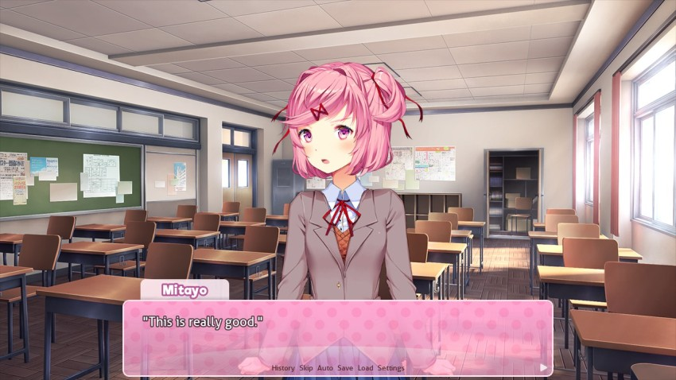
: Thank you, Natsuki."
: W-Why are you thanking me? It's not like I...!"(Haven't I heard this somewhere before...?)
: ...Made them for you or anything."SO TSUNDERE BAKA
: Eh? I thought you technically did. Sayori said-"
: Well, maybe! But not for, y-you know, you! Dummy...": Alright, alright..."
I give up on Natsuki's weird logic and dismiss the conversation.
I've been working on a pet theory that says the the pinker someone's hair, the more likely they are to be super quirky or possibly nuts.
Yuri returns to the table, carrying a tea set. She carefully places a teacup in front of each of us before setting down the teapot next to the cupcake tray.
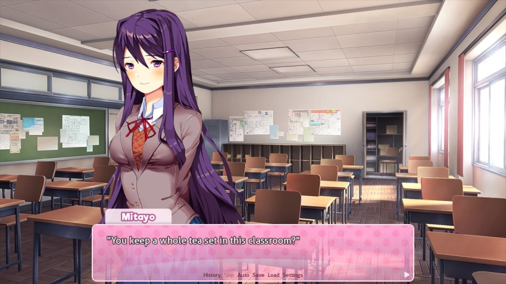
: Don't worry, the teachers gave us permission. After all, doesn't a hot cup of tea help you enjoy a good book?": Ah...I-I guess..."
: Ehehe, don't let yourself get intimidated, Yuri's just trying to impress you.": Eh?! T-That's not..."Insulted, Yuri looks away.
Good lord, they're all so easily nettled.
: I meant that, you know...": I believe you. Well, tea and reading might not be a pastime for me, but I at least enjoy tea.
: I'm glad..."Yuri faintly smiles to herself in relief. Monika raises an eyebrow, then smiles at me.
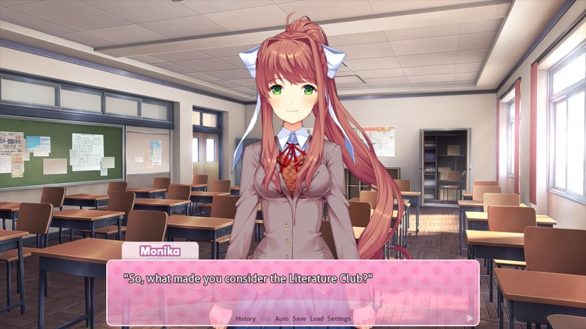
Cupcakes.
: Um..."
I was afraid of this question. Something tells me I shouldn't tell Monika that I was practically dragged here by Sayori.
Not entirely sure how 'I wanted to check out my friend's club' is an awkward statement but you do you, Mitayo.
: Well, I haven't joined any clubs yet, and Sayori seemed really happy here, so..."
: That's okay! Don't be embarrassed! We'll make sure you feel right at home, okay? As president of the Literature Club, it's my duty to make the club fun and exciting for everyone!"President is kind of a lofty title when you only have four members, isn't it?
: Monika, I'm surprised. How come you decided to start your own club? You could probably be a board member for any of the major clubs. Weren't you a leader of the debate club last year?"
This seems like a weird question to me. Why start your own club? You're already super popular!
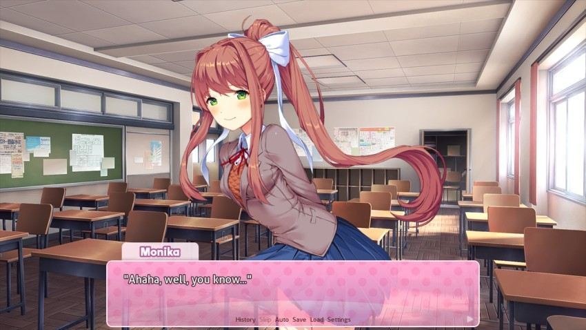
: To be honest, I can't stand all of the politics around the major clubs. It feels like nothing but arguing about the budget and publicity and how to prepare for events...I'd much rather take something I personally enjoy and make something special out of it. And it encourages others to get into literature, then I'm fulfilling that dream!": Monika really is a great leader!"Yuri also nods in agreement.
Natsuki is presumably off seething in the corner during this.
: Then I'm surprised there aren't more people in the club yet. It must be hard to start a new club."
: You could put it that way. Not many people are very interested in putting out all the effort to start something brand new...especially when it's something that doesn't grab your attention, like literature."As a English Lit major, rude.
: You have to work hard to convince people that you're both fun and worthwhile."As an English Lit major, accurate.
: But it makes school events, like the festival, that much more important. I'm confident that we can all really grow this club before we graduate! Right, everyone?": Yeah!": We'll do our best.": You know it!"Oh, welcome back to the conversation, Natsuki.
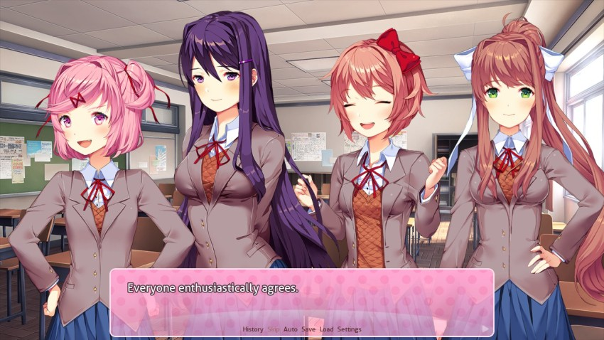
Such different girls, all interested in the same goal...Monika must have worked really hard just to find these three. Maybe that's why they were all so delighted by the idea of a new member joining. Though I still don't really know if I can keep up with their level of enthusiasm about literature...
At risk of spoilers, this will absolutely not be a problem.
: So, Mitayo, what kinds of things do you like to read?": Well...ah..."
Considering how little I've read these past few years, I don't really have a good way of answering that.
: ...Manga..."
You were about to join the anime club, Mitayo. Stop dancing around the subject - you like anime. It's fine.
I mutter quietly to myself, half-joking. Natsuki's head suddenly perks up - it looks like she wants to say something, but she keeps quiet.
: N-not much of a reader, I guess..."RUDE
: ...Well, that can change..."
What am I saying? I spoke without thinking after seeing Yuri's sad smile.
: Anyway, what about you, Yuri?"
: Well, let's see..."Yuri traces the rim of her teacup with her finger.
: My favorites are usually novels that build deep and complex fantasy worlds. The level of creativity and craftsmanship behind them is amazing to me. And telling a good story in such a foreign world is equally impressive."She's got a copy of LOTR in her backpack right now. Calling it.
Yuri goes on, clearly passionate about her reading. She seemed so reserved and timid since the moment I walked in, but it's obvious by the way her eyes light up that she finds her comfort in the world of books, not people.
: But you know, I like a lot of things. Stories with deep psychological elements usually immerse me as well. Isn't it amazing how a writer can so deliberately take advantage of your own lack of imagination to completely throw for you a loop? Anyway, I've been reading a lot of horror lately...""Mitayo, have you heard of Creepypastas?"
: Ah, I read a horror book once..."
I desperately grasp something I can relate to at the minimal level. At this rate, Yuri might as well be having a conversation with a rock.
 : For someone as gentle as you...": I guess you could say that. But if a story makes me think, or takes me to another world, then I really can't put it down. Surreal horror is often very successful at changing the way you look at the world, if only for a brief moment."
: For someone as gentle as you...": I guess you could say that. But if a story makes me think, or takes me to another world, then I really can't put it down. Surreal horror is often very successful at changing the way you look at the world, if only for a brief moment."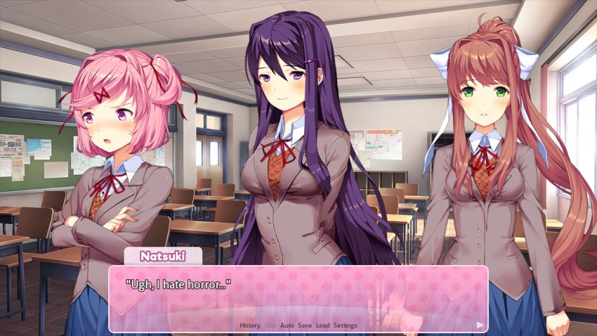
Oh, you hate lots of things.
: Oh? Why's that?": Well, I just..."Natsuki's eyes dart over to me for a split second.
: Never mind.": That's right, you usually like to write about cute things, don't you, Natsuki?": W-What? What gives you that idea?": You left a piece of scrap paper behind last club meeting. It looked like you were working on a poem called-": Don't say it out loud! And give that back!""It's a work in progress, Mom!!! It's called slash and it's ART!"
: Fine, fine~": Ehehe, your cupcakes, your poems...everything you do is just as cute as you are~"Sayori sidles up behind Natsuki and puts her hands on her shoulders.
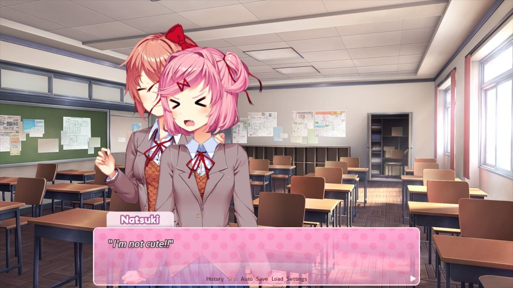
If you hate your image that much, you might want to invest in some hair dye.
: Natsuki, you write your own poems?"
: Eh? Well, I guess sometimes. Why do you care?"Just making conversation. Jeez.
: I think that's impressive. Why don't you share them sometime?"
: N-No!"Natsuki averts her eyes.
I was just kidding before but I think she actually is writing weird fanfiction.
: You wouldn't...like them...: Ah...not a very confident writer yet?"
: I understand how Natsuki feels. Sharing that level of writing takes me than just confidence. The truest form of writing is writing to oneself. You must be willing to open up to your readers, exposing your vulnerabilites and showing even the deepest reaches of your heart."Alright, tone it down a little, Zenyatta.
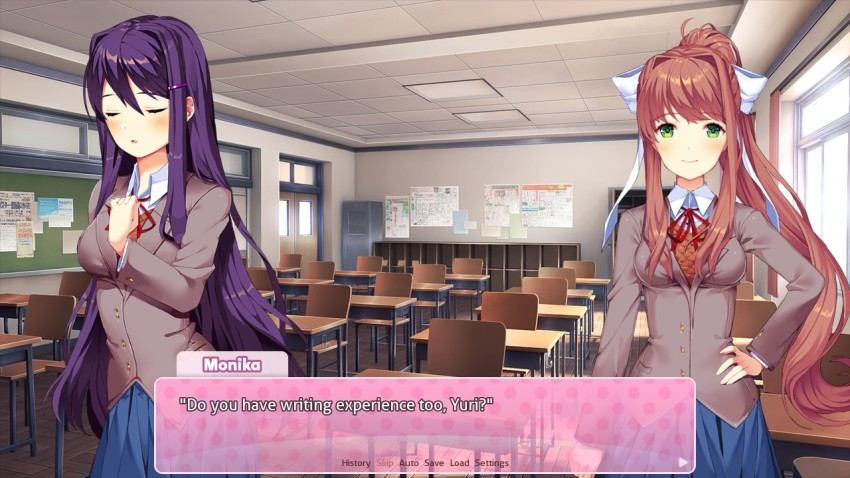
: Maybe if you share some of your work, you can set an example and help Natsuki feel comfortable enough to share hers.": ..."Yuri looks visibally uncomfortable with the idea.
: I guess it's the same for Yuri..."
: Aww...I wanted to read everyone's poems..."Wait, where have YOU been the last ten minutes, Sayuri?
We all sit in silence for a moment.
: Okay! I have an idea, everyone~"All: ...?
Natuski and Yuri look quizzically at Monika.
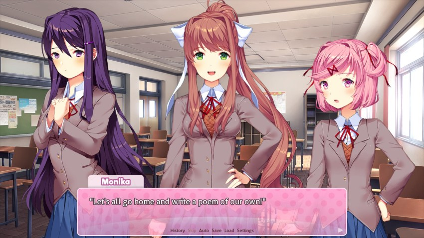
: Then, next time we meet, we'll all share them with each other. That way, everyone is even!"This seems like a horrible idea but I'm just the new guy, who am I to judge?
: U-um...": ...": Yeaah! Let's do it!"Can always count on Sayori to be up for anything.
 : Plus, now that we have a new member, I think it will help us all get a little more comfrotable with each other and strengthen the bond of the club. Isn't that right, Mitayo?"
: Plus, now that we have a new member, I think it will help us all get a little more comfrotable with each other and strengthen the bond of the club. Isn't that right, Mitayo?"Monika smiles warmly at me once again.
: Hold on...there's still one problem."
: Eh? What's that?"Now that we're back to the original topic of me joining the club, I bluntly come forth with what's been on my mind the entire time.
: I never said I would join this club! Sayori may have convinced me to stop by, but I never made any decision. I still have other clubs to look at, and...um..."
One other club, Mitayo. One. And it's anime.
I lose my train of thought.
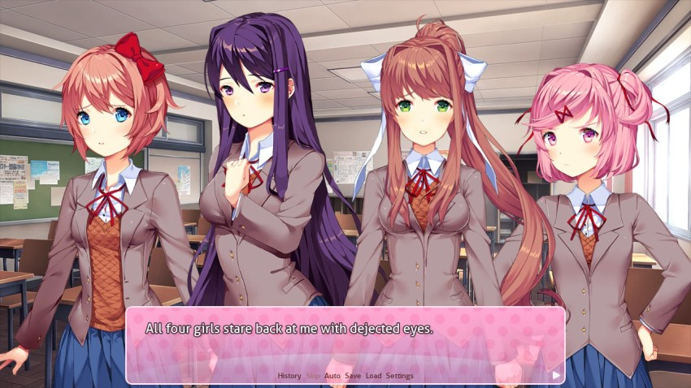
: B-But...": I'm sorry, I thought...": Hmph.": Mitayo..."To be fair, Mitayo has a perfectly valid point and they're kind of giving him unnecessary flack here.
: Y-You all..."
I'm defenseless against these girls. How am I supposed to make a clear-headed decision when it's like this? That is, if writing poems is the price I need to pay in order to spend every day with these beautiful girls...
: ...right. Okay I've decided, then."
: I'll join the Literature Club."
Fortunately for the girls, Mitayo is very, very malleable.
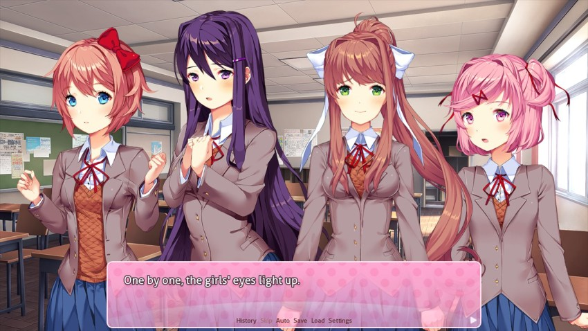
: Yesss! I'm so happyyyy~"Sayori wraps her arms around me, jumping up and down.
: H-Hey--"
: You really did scare me for a moment...": If you really just came for the cupcakes, I would be super pissed."I get the vibe that you'd be super pissed regardless.
: Then that makes it official! Welcome to the Literature Club!"
: Ah...thanks, I guess."
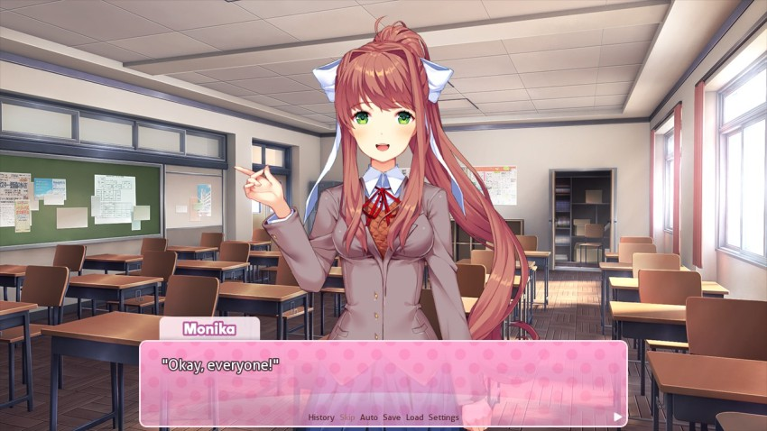
: I think with that, we can officially end today's meeting on a good note. Everyone remember tonight's assignment: write a poem to bring to the next meeting so we can all share!"Monika looks over at me once more.
: Mitayo, I look forward to seeing how you express yourself. Ehehe~": Y-Yeah..."
Can I really impress the class star Monika with my mediocre writing skills? I already feel the anxiety welling up inside me. Meanwhile, the girls continue to chit-chat as Yuri and Natsuki clean up their food.
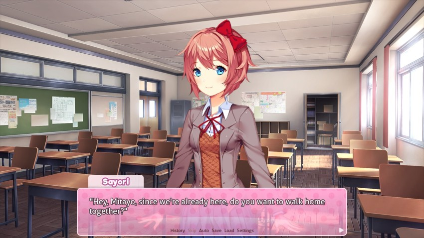
Wait, it's over? Did we actually do anything at this meeting other than eat cupcakes?
That's right -- Sayori and I never walk home together anymore because she always stayed after school for clubs.
: Sure, might as well."
: Yaay~"With that, the two of us depare the clubroom and make our way home. The whole way, my mind wanders back and forth between the four girls:
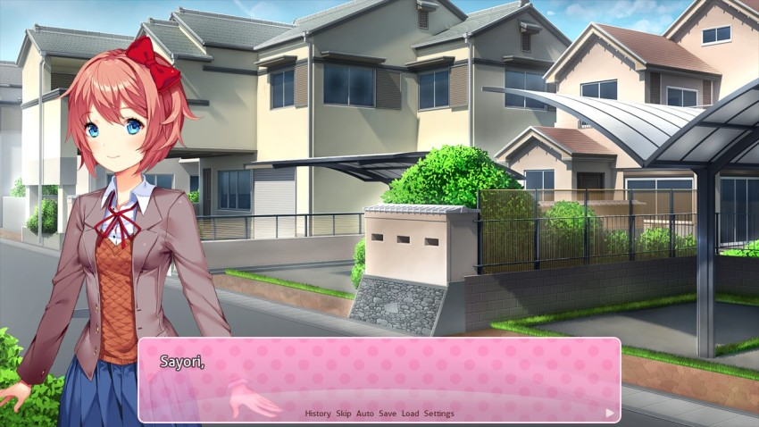


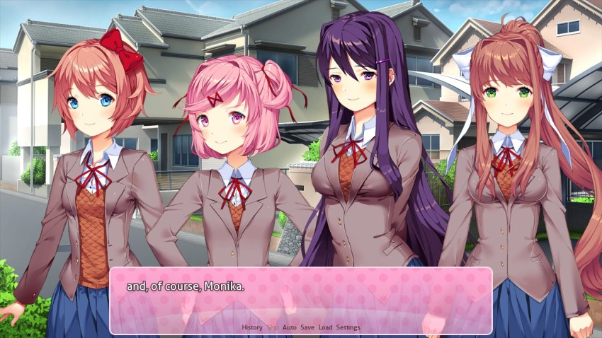
Will I really be happy spending every day after school in a literature club? Perhaps I'll have the chance to grow closer to one of these girls...Alright! I'll just need to make the most of my circumstances, and I'm sure good fortune will find me. And I guess that starts with writing a poem tonight...
BGM: Dreams Of Love and Literature **New!**
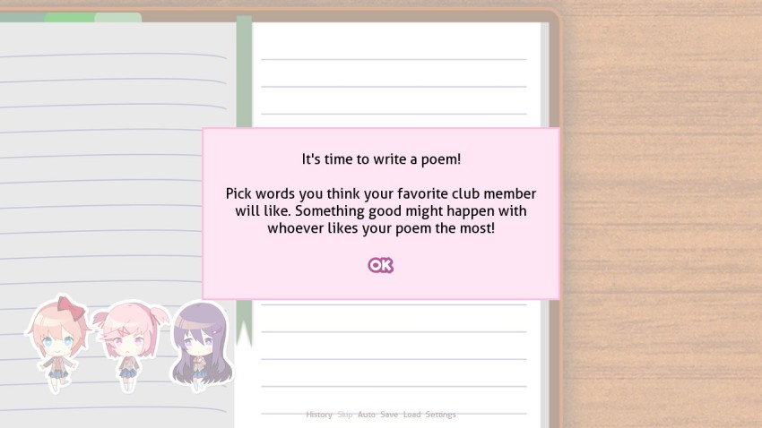
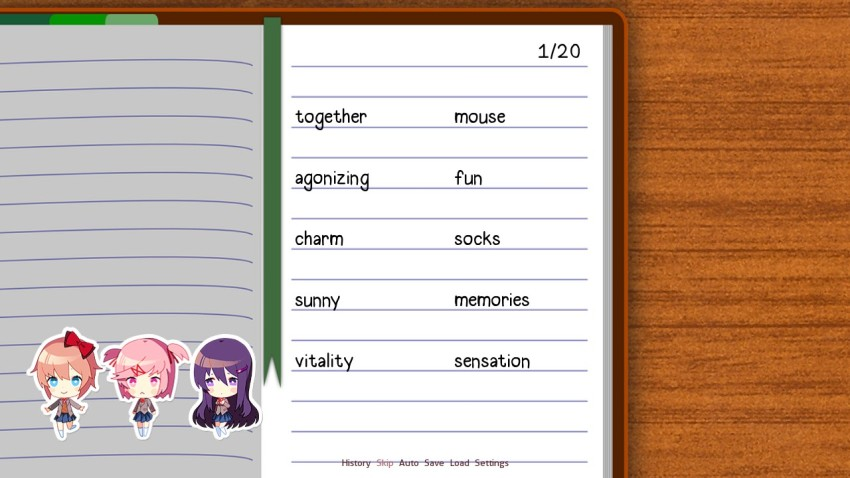
So this is where the main actual gameplay is (which is a lot more than you can say for most VNs, to be fair). Our assignment is to write a poem, and we given 20 lists of assorted words that we can use. We don't get to see the completed poem, but the elements we put in will definitely affect one of the girls based on their own preferences.
For example, on this page, Milk / Awesome / Lollipop belong to one category, Love / Peace / Promise belong to another and Melancholy / Raindrops / Climax belong to yet another. That being said, it's now time for audience participation. Knowing that your answer will increase our appeal with a certain lady, which of these series of words do you want to go with? A list of possible combinations are located below - the options are randomized, so I can't give you direct options. Some answers may or may not have similar results with multiple girls. Vote now - group A, B, or C?
quote:
GROUP A
Happiness, sadness, death, tragedy, alone, love, adventure, sweet, excitement, fireworks, romance, tears, depression, heart, marriage, passion, childhood, fun, color, hope, friends, family, party, vacation, lazy, daydream, pain, holiday, bed, feather, shame, fear, warm, flower, comfort, dance, sing, cry, laugh, dark, sunny, raincloud, calm, silly, flying, wonderful, unrequited, rose, together, promise, charm, beauty, cheer, smile, broken, precious, prayer, clumsy, forgive, nature, ocean, dazzle, special, music, lucky, misfortune, loud, peaceful, joy, sunset, fireflies, rainbow, hurt, play, sparkle, scars, empty, amazing, grief, embrace, extraordinary, awesome, defeat, hopeless, misery, treasure, bliss, memories
GROUP B
Cute, fluffy, pure, candy, shopping, puppy, kitty, clouds, lipstick, parfait, strawberry, pink, chocolate, heartbeat, kiss, melody, ribbon, jumpy, doki-doki, kawaii, skirt, cheeks, email, sticky, bouncy, shiny, nibble, fantasy, sugar, giggle, marshmallow, hop, skipping, peace, spinning, twirl, lollipop, poof, bubbles, whisper, summer, waterfall, swimsuit, vanilla, headphones, games, socks, hair, playground, nightgown, blanket, milk, pout, anger, papa, valentine, mouse, whistle, boop, bunny, anime, jump
GROUP C
Determination, suicide, imagination, secretive, vitality, existence, effulgent, crimson, whirlwind, afterimage, vertigo, disoriented, essence, ambient, starscape, disarray, contamination, intellectual, analysis, entropy, vivacious, uncanny, incongruent, wrath, heavensent, massacre, philosophy, fickle, tenacious, aura, unstable, inferno, incapable, destiny, infallible, agonizing, variance, uncontrollable, extreme, flee, dream, disaster, vivid, vibrant, question, fester, judgment, cage, explode, pleasure, lust, sensation, climax, electricity, disown, despise, infinite, eternity, time, universe, unending, raindrops, covet, unrestrained, landscape, portrait, journey, meager, anxiety, frightening, horror, melancholy, insight, atone, breathe, captive, desire, graveyard